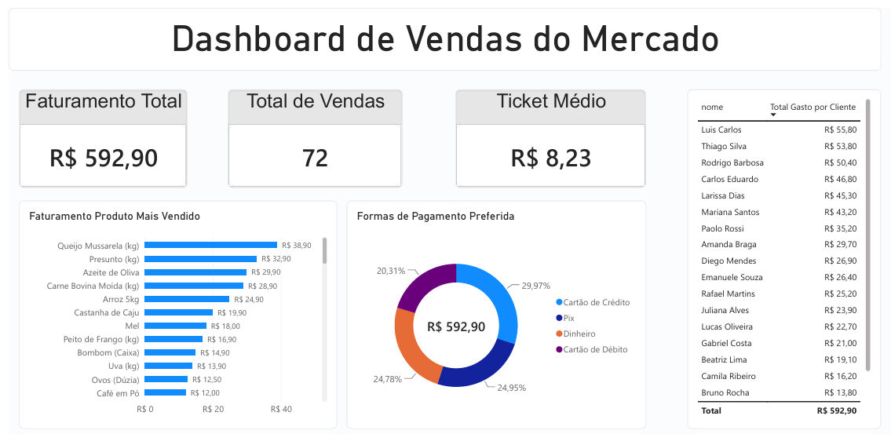

Este dashboard interativo foi desenvolvido para analisar o desempenho de vendas de um mercado, reunindo indicadores essenciais para a tomada de decisões. A solução consolida dados de faturamento total, volume de vendas, ticket médio, além de detalhar o ranking dos produtos mais vendidos e as formas de pagamento preferidas pelos clientes.
Tecnologias utilizadas: Modelagem de dados e consultas estruturadas no MySQL, processamento de métricas e visualização no Power BI, com hospedagem web integrada via GitHub e Vercel.